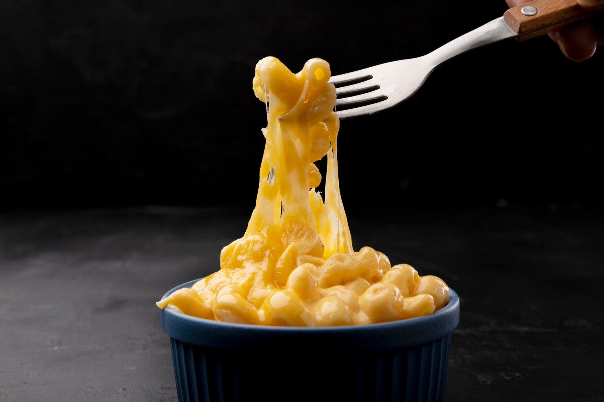

Spaghetti

Simple Macaroni and Cheese
Quick, easy, and tasty macaroni and cheese dish. Fancy, designer mac and cheese often costs forty or fifty dollars to prepare when you have so many expensive cheeses, but they aren't always the best tasting. This simple recipe is cheap and tasty.
Ingredients
- Elbow Macaroni
- Butter
- Flour
- Salt and Pepper
- Milk
- Shredded Cheese
- Boil Macaroni.
- Melt butter in saucepan over medium heat.
- Add flour, salt, and pepper until smooth.
- Pour milk and stir until smooth and bubbling.
- Add Cheese and Macaroni.